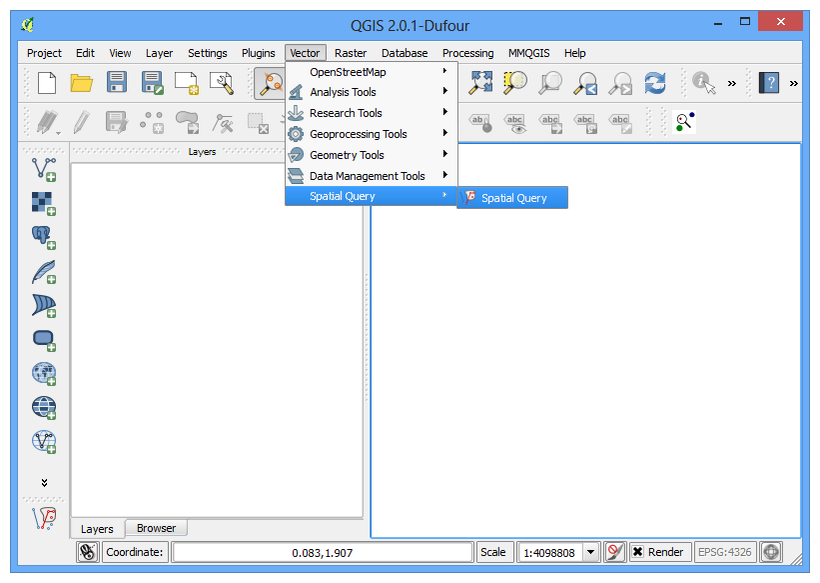

Käytämme QGIS selainta
[ Download PDF A4 Letter ]
QGIS:n mukana tulee itsenäinen sovellus nimeltään QGIS Selain. Tämä on hyodyllinen tukityökalu QGIS:lle ja helpottaa GIS tietojoukkojen hallintaa. ArcGIS käyttäjät voivat ajatella sovellutuksen olevan samankaltainen ArcCatalogin kanssa.
QGIS selaimen löytäminen
QGIS selain itsenäinen sovellus
QGIS selain on osa normaalia QGIS asennusta.
Windows: Jos asensit QGIS:n käyttäen OSGEO4W asentajaa näet QGIS selaimen käynnistysvalikossasi.
Mac: Sovellus löytyy paikasta QGIS.app/Contents/MacOS/bin/QGIS Browser.app. Voit luoda symbolisen linkin tähän sovellukseen. Navigoi Sovellushakemistoon, klikkaa oikealla QGIS ikonia ja valitse Näytä paketin sisältö. Selaile . Klikkaa oikealla QGIS selain ikonia ja valitse Tee Alias. Vedä QGIS selain alias Sovellutukset hakemistoon. Nyt voi käyttää QGIS selainta kuin mitä muuta tahansa ohjelmaa.
Linux: Voit käynnistaa QGIS selaimen komentoriviltä komennolla qbrowser. Se sijaitsee samassa hakemistossa kuin qgis sovellus.

Selain paneeli QGIS:ssä
Mukava tapa käyttää QGIS selainta on QGIS pääohjelmasta itsestään. Selain paneeli sijaitsee QGIS:n vasemman paneelin alaosassa. Klikkaa välilehteä Selain avataksesi QGIS selaimen. Jos et näe Selain välilehteä, ota se käyttöön valitsemalla valikosta .:menuselection:Näytä –> Paneelit –> Selain (2.4).

Menettely
Tutkikaamme nyt eräitä QGIS selaimen ominaisuuksia. Siirry itsenäiseen QGIS selaimeen. Selaile järjestelmäsi hakemistoa jossa on jotain paikkatietodataa. Huomaat välittömästi etuja käytettäessä selainta. Sen sijaan että näkisit kaikki tukitiedostot ja ei-spatiaalisen datan, näet vain spatiaalisia tasoja joita QGIS tukee. Klikkaa tasoa valitaksesi sen.

Kun valitset tason näet Metadatan ensimmäisessä välilehdessä oikeanpuoleisessa paneelissa. Saat nopeasti käsityksen tietojoukon perustiedoista tästä paneelista, kuten ominaisuuksien lukumäärä, projektio jne.

Jos vaihdat Esikatselu välilehteen näet tietojoukon kuvan. Tämä on nopea tapa päätellä miltä tietojoukko näyttää ennenkuin avaat sen varsinaisella QGIS ohjelmalla.

Viimeinen välilehti on Attribuutit välilehti.Täällä voit nähdä tietojoukon attribuuttitaulun ja saada käsityksen sen sisältämistä tiedoista ja niiden arvoista.

QGIS selaimella et ainoastaan pääse tutkimaan vektori ja kuva tasoja järjestelmässäsi vaan myös tietokantoja ja verkkopalveluja. Jos käytät mitä tahansa online data WMS:llä voit nopeasti esikatsella sitä selaimessa. Vain laajenna WMS sijainti ja näet resurssit joihin olet alustanut. Samaten, jos Sinulla on PostGIS, SpatiaLite tai MSSQL tietokantoja käytettävissä voit käyttää myös niitä.

QGIS selaimella kykenet selailemaan ja avaamaan zip tiedostoja. Siirry mihin tahansa hakemistoon jossa on zip tiedostoja. Voit huomata zip tiedostojen olevan myös tuettuja tietojoukkoja ja voit esikatsella niitä kuten mitä tahansa tietojoukkoa.

Toinen hyödyllinen ominaisuus on mahdollisuus lisätä tietyt hakemistot järjestelmässäsi Suosikit alle. Klikkaa oikealla mitä tahansa hakemistoa ja valitse Lisää suosikkeihin.
Muista
Hakemiston lisääminen suosikkeihin toimii ainoastaan Selain paneelissa QGIS:ssä. Tämä ominaisuus ei ole käytettävissä itsenäisessä sovellutuksessa.

Lisättyäsi sijainnin suosikkeihin voit käyttää sitä nopeasti selaimen Suosikit hakemistona.

Kun olet valinnut tason, voit kakasoisklikata sitä lisätäksesi sen QGIS karttapohjalle. Voit myös vetää-ja-pudottaa tason QGIS karttapohjalle.

Voit vaihtaa takaisin Tasot paneeliin vasemman panelin alaosasta QGIS:ssa nähdäkdesi lisätyn tason.